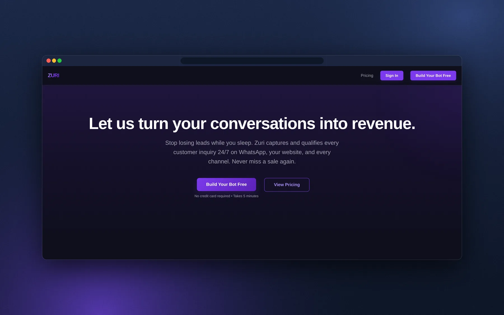
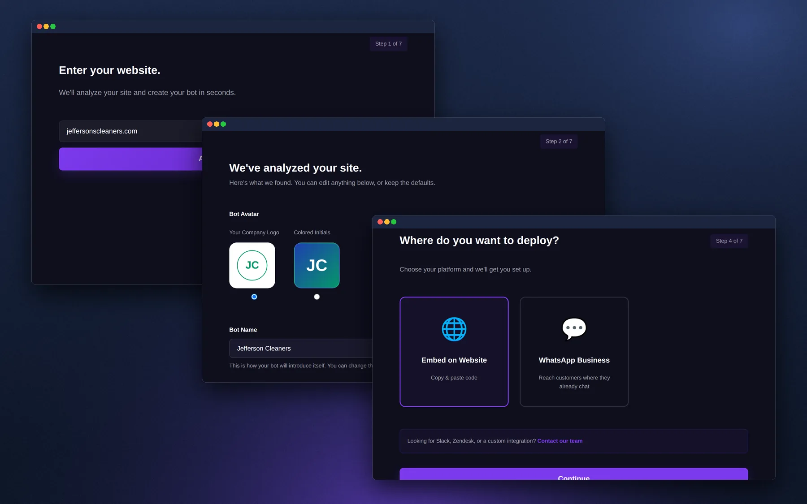
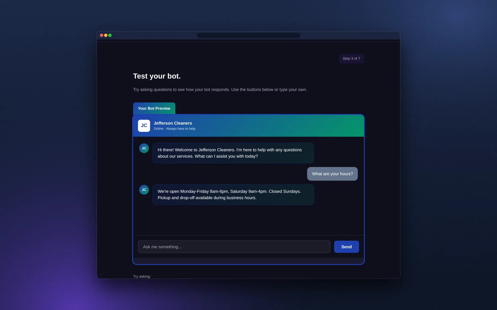
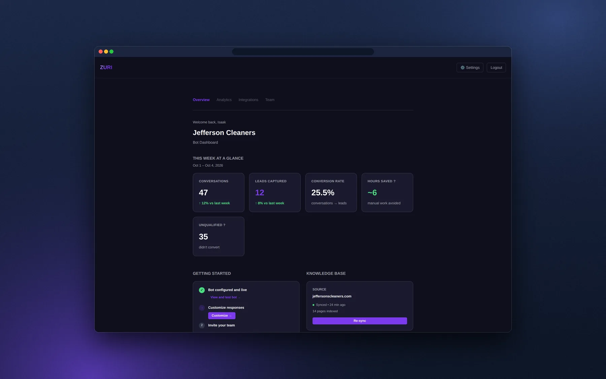

I co-founded Zuri at Antler Singapore, led product and design, and rebuilt the pitch around an interactive demo that became our primary sales asset.

Product, design, positioning and the decision to pivot.
Two co-founders (me on product and design, Isaac Kyalo on engineering) and a hiring plan for sales, marketing, product and design.
Stop selling a chatbot. Sell the outcome: leads.
Zuri.chat began as a URL-first, no-code AI chatbot platform for small business support, aimed first at Singapore and Southeast Asia. The pitch: paste your URL and see a custom, brand-aligned support agent live in 30 seconds. It read your site, picked up your brand colors and tone, and trained itself on your content.
The feedback coming out of Antler was direct: a crowded market, no defensible moat, and weak audience economics. The coaches and small businesses we were targeting did not have the budget or the lead volume to justify a bot.
The pivot was a product decision, a positioning decision and a design decision at the same time.
A crowded chatbot market and no defensible moat.
Owners do not want a bot. They want leads and revenue. Position around the outcome.
Turn conversations into revenue.
Real customers interested, and a demo that can make the case on its own.
If the product is the outcome, the demo has to prove it. So instead of asking people to configure a bot, the journey became: show me my bot working with my business.

Most tools bury the URL in settings. I made it the entry point, so the system detects the brand and learns from the site immediately and the user sees it working before they decide anything.
Instead of technical settings, four personalities (professional, helpful, direct, warm), each with a live example line. People understand the difference by reading it.
The completion screen first said "Your bot is live!" even though deployment was still pending. I changed it to "Your bot is configured" and removed copy that overpromised. Trust starts in the small words.
Website or WhatsApp, as two clear cards, with Slack, Zendesk and custom routed to a conversation. Deployment became a step in the journey, not a settings page.
"Your bot is ready. One more step." Standard was recommended, "cancel anytime" was stated plainly, and the plan cards showed what you were choosing.

Three customers showed interest (none paying yet), six research sessions came back positive on usability, and the demo became our primary sales asset: a visitor goes from a URL to a working bot, a plan and a dashboard in seven steps.

Zuri is the lead-capture piece of a bigger system. Adwiser, the marketing clarity tool for coaches and small businesses, tells them where their audience is and how to reach them, and Zuri captures the leads.
Do not sell the tool. Sell the outcome.
Sources: Singapore company count, ACRA 2026
Build a bot in seven steps, test it live, choose a plan and see the dashboard. The whole flow runs in the demo.
I'm open to product design leadership roles. If this is the kind of thinking you need, I'd like to hear about it. Hiring? Put the role in the subject line. Selling a service? I'm not buying.
Email about a roleMore work